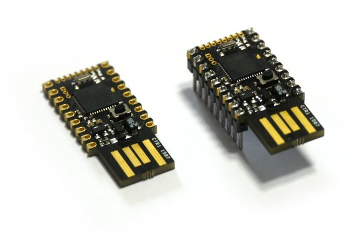
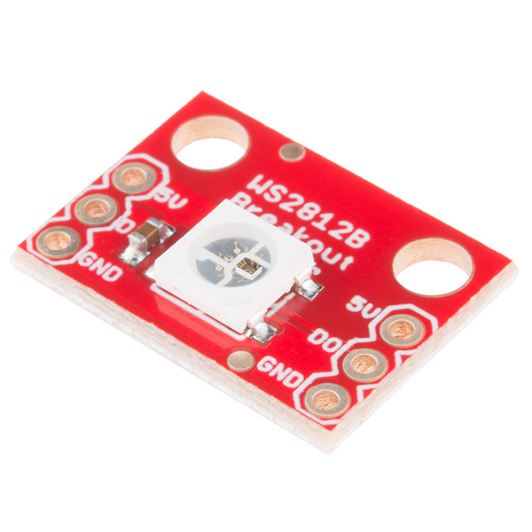
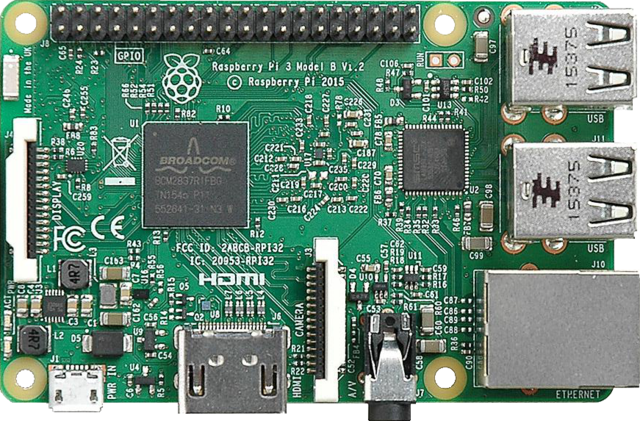
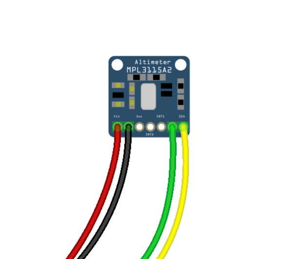

layout: true class: theme-whiskey, slides-left --- name: cover # JavaScript on Hardware Michael Jaser<br> Peerigon GmbH<br> [@mmeaku](https://twitter.com/mmeaku) <img id="slide-cover-img" src="./assets/peerigon-logo.png" width="400"> --- layout: true class: theme-whiskey, slides-centered --- class: slides-chapter ## Internet of Shit --- <blockquote class="twitter-tweet" data-lang="de"><p lang="en" dir="ltr">I might not be going Mars or be one of the world's best science educators, but I did make a drone hair cutter, so I've got that going for me <a href="https://t.co/uILXYSb1Vi">pic.twitter.com/uILXYSb1Vi</a></p>— Simone Giertz (@SimoneGiertz) <a href="https://twitter.com/SimoneGiertz/status/821461426141204480">17. Januar 2017</a></blockquote> --- <small>Source: <a href="https://oralb.com/en-us/product-collections/bluetooth" >https://oralb.com/en-us/product-collections/bluetooth</a></small> --- ## Why JavaScript on Hardware? - ~~JavaScript~~ Ruby / Python / Go / Lua... - stop dealing with language issues (C/C++) - focus on hardware and interaction --- class: slides-chapter ## Espruino Pico ---  --- ## Spec - 32-bit, 84MHz ARM Cortex M4 CPU - 96kb RAM, 384kb flash - 22 GPIO pins : 9 Analog inputs, 21 PWM, 2 Serial, 3 SPI, 3 I2C - USB Type A connector - 2x on-board LEDs, 1x button. - Current draw in sleep: < 0.05mA - over 2.5 years on a 2500mAh battery - [30 €](https://shop.pimoroni.de/products/espruino-pico) --- ## Hardware  - WS2801 - addressable RGB LED - speaks 1-Wire / SPI - chainable - < 3 € --- ## Ultrasonic distance sensor <img src="assets/hc-sr04.jpg" style="height: 20vh;" /> - HC-SR04 - 2cm - 400cm range - ~3 € <small>Source: <a href="https://www.sparkfun.com/products/13959">https://www.sparkfun.com/products/13959</a></small> --- class: slides-chapter ## Demo --- class: slides-chapter ## Raspberry Pi ---  <small>By <a href="//commons.wikimedia.org/w/index.php?title=User:Herbfargus&action=edit&redlink=1" class="new" title="User:Herbfargus (page does not exist)">Herbfargus</a> - <span class="int-own-work" lang="en">Own work</span>, <a href="http://creativecommons.org/licenses/by-sa/4.0" title="Creative Commons Attribution-Share Alike 4.0">CC BY-SA 4.0</a>, <a href="https://commons.wikimedia.org/w/index.php?curid=47497384">Link</a></small> --- ## Raspberry Pi 3 - 64-bit 1.2GHz quad-core ARMv8 CPU - 1GB RAM - 40 GPIO pins - Ethernet port - 802.11n Wireless LAN - Bluetooth 4.1 - Bluetooth Low Energy (BLE) - 4 USB ports - 800 mA - ~44 € --- ## Raspberry Pi zero - 32-bit, 1Ghz, Single-core CPU - 512MB RAM - Mini HDMI and USB On-The-Go ports - Micro USB power - 40 GPIO pins - ~160 mA - ~5 € --- ## Setup - Raspbian - Node.js 7.x - [johnny-five](http://johnny-five.io) --- ## Johnny Five ```javascript const five = require("johnny-five"); const board = new five.Board(); board.on("ready", function() { const led = new five.Led(13); // "blink" the led in 500ms // on-off phase periods led.blink(500); }); ``` --- ## Johnny Five - Node.js module for hardware interaction - runs in [tethered mode](http://johnny-five.io/platform-support/#relationship:host-client) on _Arduinos_ and most clones - runs in [standalone mode](http://johnny-five.io/platform-support/#relationship:embedded) on _Tessel_, _BeagleBone_, _Intel Galileo_,... --- ## Hardware  - MPL3115A2 - reads temperature, pressure and altitude - ~10 € --- class: slides-chapter # Demo --- ## Conclusion - Hardware hacking is fun! - it's easy if you stick with "standard" components - start with a language you're comfortable with --- ## Thank you - michael.jaser@peerigon.com - @mmeaku on Twitter --- ## Links - http://www.espruino.com/ - https://www.raspberrypi.org/ - [Gordon Williams: JavaScript for Microcontrollers with Espruino](https://www.youtube.com/watch?v=hSyXpM1L4B4) - [Sayanee Basu: Alice in Hardware Land - JavaScript models of interaction with the physical world](https://www.youtube.com/watch?v=pPBTNKXm7k8)